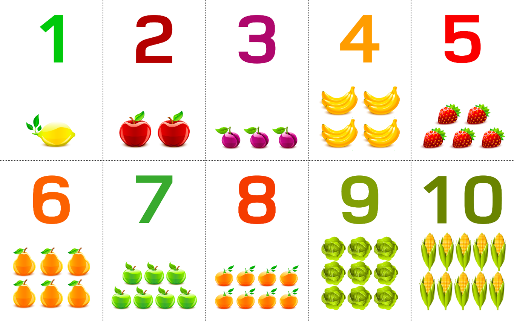

Балалардың есте сақтау қабілетін жақсартуға арналған әдістер (6-15 жас)
Жалпы балалардың есте сақтау қабілеті өте жақсы дамыған. Алайда,қазіргі уақытта түрлі гаджеттердің әсерінен біз балалардың есте сақтау қабілетін нашарлатпау үшін үнемі жаттықтыруымыз керек!
Бұл әдіс 5 жастан асқан балаларға арналған. Баланың ойлау, есте сақтау қабілетін дамытады.
Бұл ойында біз 0 немесе 1-ден 9-ға дейінгі сандарды жазып, оларға ассоциация жасаймыз. Мысалы, 1-бала, 8-аққала. Ассоциацияларды біраз қайталаймыз, кейін оларды қолдану арқылы түрлі күрделі ақпараттарды, деректерді балаға оңай, әрі қызықты түрде жеткіземіз. Сондай-ақ, ол дерексізде сантүрлі сөйлемдерді құрастыра аламыз. Мысалы,18-бала аққаламен ойнады.
